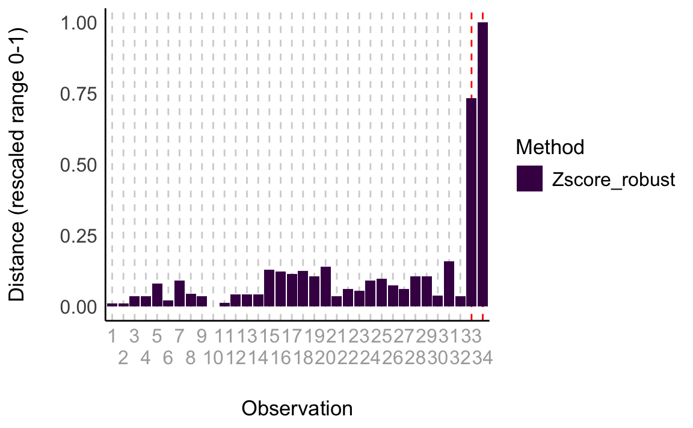
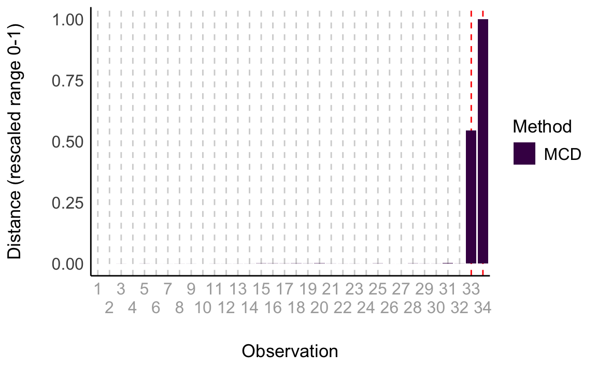

here::here("code", "_common.R") |>
source()
# Load packages
if (!requireNamespace("pacman")) install.packages("pacman")
pacman::p_load(performance, see, datawizard)24 Outlier
In questo capitolo imparerai a
- comprendere il ruolo e gli effetti degli outlier;
- individuare outlier con metodi univariati, multivariati e model-based;
- utilizzare il pacchetto {performance} in R per rilevarli;
- documentare e rendere riproducibili le procedure;
- considerare alternative (es. winsorizzazione) e preregistrare le scelte.
Prerequisiti
- Leggere “Check your outliers! An introduction to identifying statistical outliers in R with easystats” (Thériault et al., 2024).
Preparazione del Notebook
24.1 Introduzione
I dati raccolti nella vita reale spesso contengono osservazioni che, se confrontate con la maggior parte della popolazione, risultano “anomale” o “estreme”. Queste osservazioni, comunemente note come outlier, possono avere cause diverse: ad esempio, potrebbero provenire da un processo generativo differente, oppure essere semplicemente casi estremi ma comunque possibili. Definire i confini tra ciò che è “normale” e ciò che è “anormale” non è semplice.
Una gestione non adeguata degli outlier può influenzare considerevolmente le stime statistiche, introducendo bias negli effetti misurati e riducendo la capacità predittiva dei modelli. È quindi importante affrontare il problema degli outlier con criteri chiari e strategie riproducibili. Tuttavia, nonostante siano disponibili linee guida consolidate, molti ricercatori non trattano gli outlier in modo coerente, o utilizzano approcci non appropriati (Simmons et al., 2011).
Uno dei motivi potrebbe essere la scarsa consapevolezza delle raccomandazioni esistenti o la difficoltà ad implementarle con il proprio software di analisi. In questo capitolo mostreremo come seguire le buone pratiche correnti per la rilevazione automatica e riproducibile degli outlier (Statistical Outlier Detection, SOD) in R utilizzando il pacchetto {performance} (Lüdecke et al. 2021).
Il materiale di questo capitolo riassume l’articolo di Thériault et al. (2024).
24.2 Identificare gli Outlier
Molti ricercatori cercano di identificare gli outlier utilizzando metodi basati sulla media (ad esempio, z-score tradizionali). Tuttavia, questi metodi non sono robusti, poiché sia la media sia la deviazione standard sono sensibili agli stessi outlier e presuppongono una distribuzione normale. Le linee guida attuali raccomandano invece metodi robusti, come quelli che si basano sulla mediana anziché sulla media (Leys et al., 2019).
La scelta del metodo di rilevazione outlier dipende però da vari fattori. In alcuni casi potrebbe bastare un’ispezione visiva, ma spesso si preferiscono soluzioni algoritmiche. Inoltre, il metodo da utilizzare può variare in base al tipo di test statistico o al modello di interesse. Ad esempio, nei modelli di regressione ha senso ricercare outlier che non si adattano bene al modello (outlier “model-based”), mentre altre volte si considera la distanza di una singola osservazione dal “centro” della distribuzione (outlier “distribution-based”). Queste strategie possono essere univariate (un’unica variabile) o multivariate (più variabili contemporaneamente).
In assenza di metodi ad hoc per modelli complessi (ad es. SEM), può essere utile cercare outlier multivariati. Per test semplici (inferenze su una media, o sul confronto tra medie, o sulle correlazioni), possono essere sufficienti metodi univariati, pur essendo meno flessibili e talvolta più inclini a falsi positivi.
È importante ricordare che qualsiasi scelta resta soggettiva e dev’essere documentata in modo trasparente e riproducibile (Leys et al., 2019). Idealmente, le decisioni andrebbero prese prima della raccolta dei dati (ad esempio in una preregistrazione) e poi riportate chiaramente nell’articolo, menzionando ogni eventuale deviazione dal piano originale.
Nelle sezioni successive illustreremo vari metodi e forniremo esempi di codice R per implementarli.
24.3 Outlier Univariati
Un approccio comune è individuare outlier in base alla distanza dal “centro” della distribuzione di una singola variabile. Il metodo dei z-score tradizionali, basati sulla media, non è robusto. Si raccomanda invece di usare la mediana e la Median Absolute Deviation (MAD) (Leys et al., 2019).
La funzione check_outliers() del pacchetto {performance}, con method = "zscore_robust", consente di individuare outlier secondo questo criterio. Ad esempio, il threshold predefinito è pari a ±3.29 MAD, ma può essere modificato.
Di seguito un esempio con il dataset mtcars, disponibile in R. Prima creiamo degli outlier artificiali, poi utilizziamo check_outliers().
head(mtcars)
#> mpg cyl disp hp drat wt qsec vs am gear carb
#> Mazda RX4 21.0 6 160 110 3.90 2.62 16.5 0 1 4 4
#> Mazda RX4 Wag 21.0 6 160 110 3.90 2.88 17.0 0 1 4 4
#> Datsun 710 22.8 4 108 93 3.85 2.32 18.6 1 1 4 1
#> Hornet 4 Drive 21.4 6 258 110 3.08 3.21 19.4 1 0 3 1
#> Hornet Sportabout 18.7 8 360 175 3.15 3.44 17.0 0 0 3 2
#> Valiant 18.1 6 225 105 2.76 3.46 20.2 1 0 3 1# Create some artificial outliers and an ID column
data <- rbind(mtcars[1:4], 42, 55)
data <- cbind(car = row.names(data), data)
outliers <- check_outliers(data, method = "zscore_robust", ID = "car")
outliers
#> 2 outliers detected: cases 33, 34.
#> - Based on the following method and threshold: zscore_robust
#> (3.291).
#> - For variables: mpg, cyl, disp, hp.
#>
#> -----------------------------------------------------------------------------
#>
#> The following observations were considered outliers for two or more
#> variables by at least one of the selected methods:
#>
#> Row car n_Zscore_robust
#> 1 33 33 2
#> 2 34 34 2
#>
#> -----------------------------------------------------------------------------
#> Outliers per variable (zscore_robust):
#>
#> $mpg
#> Row car Distance_Zscore_robust
#> 33 33 33 3.71
#> 34 34 34 5.85
#>
#> $cyl
#> Row car Distance_Zscore_robust
#> 33 33 33 12.1
#> 34 34 34 16.5Questi due outlier aggiunti artificialmente vengono rilevati correttamente. Per escluderli dal dataset principale:
which(outliers)
#> [1] 33 34
# Restituisce i numeri di riga degli outlierdata_clean <- data[-which(outliers), ]È anche possibile visualizzare gli outlier graficamente:
plot(outliers)
Oltre al metodo MAD, check_outliers() supporta anche altri approcci univariati (basati su IQR, intervalli a densità più alta, ecc.).
24.4 Outlier Multivariati
Quando si analizzano più variabili contemporaneamente (ad esempio altezza e peso di un gruppo di persone), può risultare complesso stabilire quali osservazioni siano davvero “fuori dal comune” rispetto alla maggioranza. In questo contesto, la distanza di Mahalanobis offre un modo per individuare outlier multivariati, cioè osservazioni che si discostano notevolmente dal “centro” dei dati considerati nel loro insieme, anziché analizzare ogni variabile separatamente.
Per comprendere intuitivamente la distanza di Mahalanobis, immaginate di avere una nube di punti che rappresentano individui, ciascuno con i propri valori di altezza e peso. Il “centro” di questa nube è un punto ideale che rappresenta una sorta di media multivariata (tenendo conto sia dell’altezza sia del peso). La distanza di Mahalanobis misura quanto ogni singolo individuo si allontana da questo centro, considerando la variabilità congiunta delle variabili (ad esempio, la correlazione tra altezza e peso). Se un individuo presenta caratteristiche molto diverse rispetto alla maggioranza, la sua distanza di Mahalanobis sarà elevata, segnalando un potenziale outlier.

Tuttavia, la versione classica di questa misura non è particolarmente robusta: la presenza stessa di outlier può distorcere il calcolo del “centro” e della variabilità complessiva, rendendo meno affidabile l’individuazione di altri valori anomali. Per questo motivo, si preferisce utilizzare una variante più resistente, la Minimum Covariance Determinant (MCD), che diminuisce l’influenza degli outlier stessi nel processo di identificazione.
All’interno del pacchetto {performance} in R, è possibile applicare questa variante robusta utilizzando la funzione check_outliers() con l’argomento method = "mcd". In questo modo, è possibile individuare gli outlier multivariati in maniera più solida e coerente, anche quando si lavora con dati fortemente influenzati da valori estremi.
outliers <- performance::check_outliers(data, method = "mcd", verbose = FALSE)
outliers
#> 2 outliers detected: cases 33, 34.
#> - Based on the following method and threshold: mcd (20).
#> - For variables: mpg, cyl, disp, hp.Si possono poi visualizzare questi outlier:
plot(outliers)
Sono disponibili anche altre varianti multivariate documentate nella help page della funzione.
24.4.1 Outlier Basati sul Modello (Model-Based)
Quando si impiega un modello di regressione, lo scopo principale è capire la relazione tra una o più variabili predittive (ad esempio, il numero di ore di studio) e una variabile di esito (ad esempio, il punteggio a un test). In questi contesti, può capitare che alcuni punti dati, pur essendo veri e propri dati raccolti, esercitino un’influenza eccessiva sulle stime dei parametri del modello, alterando in modo significativo i risultati dell’analisi. Queste osservazioni vengono definite outlier “model-based” proprio perché il criterio per individuarle non è un semplice confronto con la media o la mediana, bensì con le previsioni del modello stesso.
In pratica, per ciascuna osservazione si verifica quanto i risultati previsti dal modello (le stime dei valori di esito) cambierebbero se quella specifica osservazione venisse rimossa. Se togliendo uno specifico caso il modello cambia notevolmente, allora quell’osservazione è considerata un outlier model-based. L’idea è che non ci limitiamo a guardare quanto un singolo valore sia “lontano” dagli altri in termini di distribuzione, ma verifichiamo quanto quel valore “tira” i risultati del modello nella sua direzione.
Il pacchetto {performance} in R fornisce due metodi per individuare questo tipo di outlier. Per i modelli di regressione classici (ad esempio quelli stimati con la funzione lm() in R), è possibile utilizzare Cook’s distance (method = "cook"). Cook’s distance misura quanto i risultati del modello si modificherebbero rimuovendo singolarmente ogni osservazione, identificando così i casi che hanno un effetto sproporzionato sulle stime.
Per i modelli bayesiani, che utilizzano un approccio probabilistico diverso dal classico, è disponibile invece una metrica chiamata Pareto (method = "pareto"). Questo indicatore è ottimizzato per valutare la sensibilità dei modelli bayesiani ad alcune osservazioni estreme, segnalando quelle che hanno un impatto potenzialmente troppo forte sulle inferenze.
In sintesi, utilizzare un approccio model-based significa considerare gli outlier non soltanto come valori numerici insoliti, ma come casi che, modificando eccessivamente la forma o le conclusioni del modello, ne compromettono la stabilità e l’affidabilità. L’approccio offerto da {performance} permette così di individuare queste osservazioni “critiche” in modo più mirato e consapevole.
model <- lm(disp ~ mpg * hp, data = data)
outliers <- check_outliers(model, method = "cook")
outliers
#> 2 outliers detected: cases 31, 34.
#> - Based on the following method and threshold: cook (0.806).
#> - For variable: (Whole model).In questo modo si individuano outlier che hanno un’elevata influenza sul modello.
Tabella di Riferimento
| Tipo di Analisi | Metodo Outlier | Threshold Suggerito | Codice |
|---|---|---|---|
| Regressione supportata (lm) | Model-based (Cook) | Cook: qf(0.5, ...)
|
check_outliers(model, method="cook") |
| SEM o modello non supportato | Multivariato (MCD) | MCD: qchisq(1-0.001, df)
|
check_outliers(data, method="mcd") |
| Test semplici (t, correlazioni) | Univariato (robust z) | ±~3.29 (MAD) | check_outliers(data, method="zscore_robust") |
24.4.2 Cook’s Distance vs. MCD
Leys et al. (2018) suggeriscono di preferire la MCD alla Cook’s distance in presenza di molti outlier, poiché quest’ultima valuta l’impatto della rimozione di un’osservazione alla volta, rischiando così di lasciare il modello ancora “contaminato” da altre osservazioni anomale. D’altro canto, i metodi basati sulla distribuzione possono risultare eccessivamente rigorosi, segnalando come outlier anche casi estremi ma perfettamente in linea con il modello teorico. Quando disponibili, i metodi model-based forniscono dunque una prospettiva più informativa.
24.4.3 Approccio Composito (Composite Outlier Score)
Il pacchetto {performance} permette di combinare diversi metodi per ottenere un punteggio composito, aumentando l’affidabilità della classificazione degli outlier. Ad esempio:
Si ottengono così osservazioni ritenute outlier da almeno la metà dei metodi utilizzati.
24.5 Gestione degli Outlier
Dopo l’identificazione, come gestire gli outlier? Leys et al. (2019) distinguono tra outlier dovuti a errori (da correggere o rimuovere), outlier interessanti (potenzialmente rilevanti dal punto di vista teorico) e outlier casuali (da mantenere se compatibili con la distribuzione di interesse).
Se gli outlier appartengono realmente alla distribuzione di interesse, vanno mantenuti. Se però provengono da un’altra distribuzione o compromettono la robustezza dei risultati, potrebbe essere giustificata la loro rimozione. In alcuni casi, si può utilizzare la “winsorizzazione”, cioè ridurre i valori estremi entro soglie stabilite, per conservare potenza statistica.
Nel pacchetto easystats, la funzione winsorize() di {datawizard} semplifica questo compito:
winsorized_data <- winsorize(
data,
method = "zscore",
robust = TRUE,
threshold = 3
)24.6 Importanza della Trasparenza
Qualunque decisione va documentata chiaramente: quanti outlier sono stati individuati, con quale metodo, a quale threshold, come sono stati gestiti, e preferibilmente con il codice R utilizzato. La preregistrazione e la condivisione dei dati e del codice (ad es. su OSF) sono pratiche consigliate per garantire riproducibilità e trasparenza.
24.7 Riflessioni Conclusive
Abbiamo mostrato come identificare gli outlier in modo coerente e trasparente utilizzando la funzione check_outliers() del pacchetto {performance}, allineandoci alle buone pratiche correnti. Tuttavia, la buona pratica non si limita alla scelta degli algoritmi: è fondamentale anche preregistrare le decisioni, essere coerenti, trasparenti e fornire giustificazioni. Speriamo che queste linee guida e gli esempi di codice facilitino l’implementazione di procedure corrette e riproducibili per il trattamento degli outlier.
Informazioni sull’Ambiente di Sviluppo
sessionInfo()
#> R version 4.4.2 (2024-10-31)
#> Platform: aarch64-apple-darwin20
#> Running under: macOS Sequoia 15.2
#>
#> Matrix products: default
#> BLAS: /Library/Frameworks/R.framework/Versions/4.4-arm64/Resources/lib/libRblas.0.dylib
#> LAPACK: /Library/Frameworks/R.framework/Versions/4.4-arm64/Resources/lib/libRlapack.dylib; LAPACK version 3.12.0
#>
#> locale:
#> [1] C/UTF-8/C/C/C/C
#>
#> time zone: Europe/Rome
#> tzcode source: internal
#>
#> attached base packages:
#> [1] stats graphics grDevices utils datasets methods base
#>
#> other attached packages:
#> [1] datawizard_0.13.0 performance_0.12.4 see_0.9.0
#> [4] gridExtra_2.3 patchwork_1.3.0 bayesplot_1.11.1
#> [7] psych_2.4.12 scales_1.3.0 markdown_1.13
#> [10] knitr_1.49 lubridate_1.9.4 forcats_1.0.0
#> [13] stringr_1.5.1 dplyr_1.1.4 purrr_1.0.2
#> [16] readr_2.1.5 tidyr_1.3.1 tibble_3.2.1
#> [19] ggplot2_3.5.1 tidyverse_2.0.0 rio_1.2.3
#> [22] here_1.0.1
#>
#> loaded via a namespace (and not attached):
#> [1] generics_0.1.3 stringi_1.8.4 lattice_0.22-6 hms_1.1.3
#> [5] digest_0.6.37 magrittr_2.0.3 evaluate_1.0.1 grid_4.4.2
#> [9] timechange_0.3.0 fastmap_1.2.0 rprojroot_2.0.4 jsonlite_1.8.9
#> [13] viridisLite_0.4.2 mnormt_2.1.1 cli_3.6.3 rlang_1.1.4
#> [17] munsell_0.5.1 withr_3.0.2 tools_4.4.2 parallel_4.4.2
#> [21] tzdb_0.4.0 colorspace_2.1-1 pacman_0.5.1 vctrs_0.6.5
#> [25] R6_2.5.1 lifecycle_1.0.4 htmlwidgets_1.6.4 MASS_7.3-61
#> [29] insight_1.0.0 pkgconfig_2.0.3 pillar_1.10.0 gtable_0.3.6
#> [33] glue_1.8.0 xfun_0.49 tidyselect_1.2.1 farver_2.1.2
#> [37] htmltools_0.5.8.1 nlme_3.1-166 labeling_0.4.3 rmarkdown_2.29
#> [41] compiler_4.4.2Bibliografia
Leys, C., Delacre, M., Mora, Y. L., Lakens, D., & Ley, C. (2019). How to classify, detect, and manage univariate and multivariate outliers, with emphasis on pre-registration. International Review of Social Psychology, 32(1).
Leys, C., Klein, O., Dominicy, Y., & Ley, C. (2018). Detecting multivariate outliers: Use a robust variant of the Mahalanobis distance. Journal of Experimental Social Psychology, 74, 150–156.
Simmons, J. P., Nelson, L. D., & Simonsohn, U. (2011). False-positive psychology: Undisclosed flexibility in data collection and analysis allows presenting anything as significant. Psychological science, 22(11), 1359–1366.
Thériault, R., Ben-Shachar, M. S., Patil, I., Lüdecke, D., Wiernik, B. M., & Makowski, D. (2024). Check your outliers! An introduction to identifying statistical outliers in R with easystats. Behavior Research Methods, 56(4), 4162–4172.